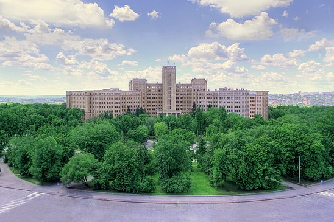

ХАРКІВ - МІСТО ГЕРОЙ! МИ НЕЗДОЛАННІ! ВСЕ БУДЕ УКРАЇНА!

ВИЗНАЧНІ МІСЦЯ ХАРКОВА

-
Парк Шевченко
Головний парк Харкова
-
 Держпром
Держпром
Будинок державної промисловості
-
 Пам’ятник Тарасові Шеченку
Пам’ятник Тарасові Шеченку
Пам’ятник українському письменнику, поетові, митцю i мислителю Тарасові Шевченку
-

Харківський
Національний
Університет ім.Каразіна
Один із старіших університетів у Східній Європі
-
 Дзеркальний Струмінь
Дзеркальний Струмінь
Альтанка і фонтан, сучасний символ міста
-
 Харківський зоопарк
Харківський зоопарк
Національний зоологічний парк, найстаріший в Україні
-
 Лопанська Стрілка
Лопанська Стрілка
Сквер та міст у центрі Харкова
-
 Південний Вокзал
Південний Вокзал
Головна пассажирська станція
-
 Харківський
Національни Театр
Опери та Балету
Харківський
Національни Театр
Опери та Балету
Перший український стаціонарний театр